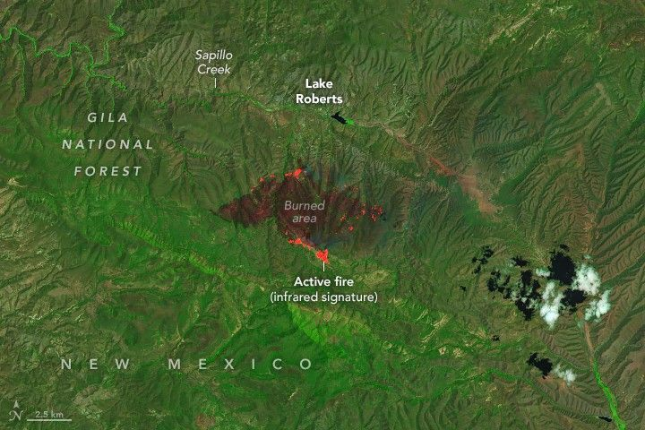

New Mexico Battles Wildfires
As extreme drought gripped parts of New Mexico in June 2025, firefighters battled large wildland fires in the southwestern part of the state. The two largest were the Buck and Trout fires, which, as of June 18, had together burned more than 80,000 acres (32,000 square kilometers) since igniting on June 11 and 12, respectively. High winds, low humidity, and dry tinder—grass, brush, and timber—have fueled their rapid spread.
The OLI (Operational Land Imager) on Landsat 8 captured these images of the fires on June 14, 2025. Burned area is evident in the false-color images, which show shortwave infrared, near infrared, and visible light (bands 7-5-4). This band combination makes it easier to identify unburned vegetated areas (green) and the recently burned landscape (brown). Bright orange indicates the infrared signature of actively burning fires. The Trout fire, burning about 10 miles (16 kilometers) north of Silver City, is shown above. The Buck fire, burning to the north of the Trout fire, is below.
A similar false-color satellite image shows the burned area left by the Buck fire. On June 14, the fire had charred an area several times larger than the Trout fire. The image shows a significant amount of activity on the northern side of the fire's perimeter.
NASA fire tracking tools showed the Trout fire perimeter had grown significantly larger in the days after Landsat captured these images. By June 18, it had reached the edge of Lake Roberts and threatened communities along Sapillo Creek. Residents of about 2,000 homes live within evacuation zones and have been forced to leave, according to news reports. NASA fire tracking tools showed less growth of the Buck fire, which was 25 percent contained on June 18.
On June 17, New Mexico's governor issued an emergency declaration in response to the Trout fire, which allowed emergency responders to request additional support from federal or other entities. More than 875 firefighting personnel were responding to the fire on June 18, including hotshot crews, hand crews, dozers, helicopters, and fixed-wing aircraft, according to InciWeb. As of that date, the blaze was zero percent contained, though no infrastructure had been reported as damaged or destroyed. Several communities downwind of the Trout fire faced hazardous air quality.
NASA Earth science missions have detected elevated levels of certain gases and particles around the fire that can contribute to poor air quality. The TEMPO (Tropospheric Emissions: Monitoring of Pollution) mission, for instance, detected plumes of nitrogen dioxide and formaldehyde streaming from the fire on June 17. TEMPO is the first space-based instrument designed to continuously measure air quality above North America with the resolution of a few square miles.
NASA’s satellite data are part of a global system of observations that are used to track fire behavior and analyze emerging trends. Among the real-time wildfire monitoring tools that NASA makes available are FIRMS (Fire Information for Resource Management System), the Worldview browser, and the Fire Event Explorer.